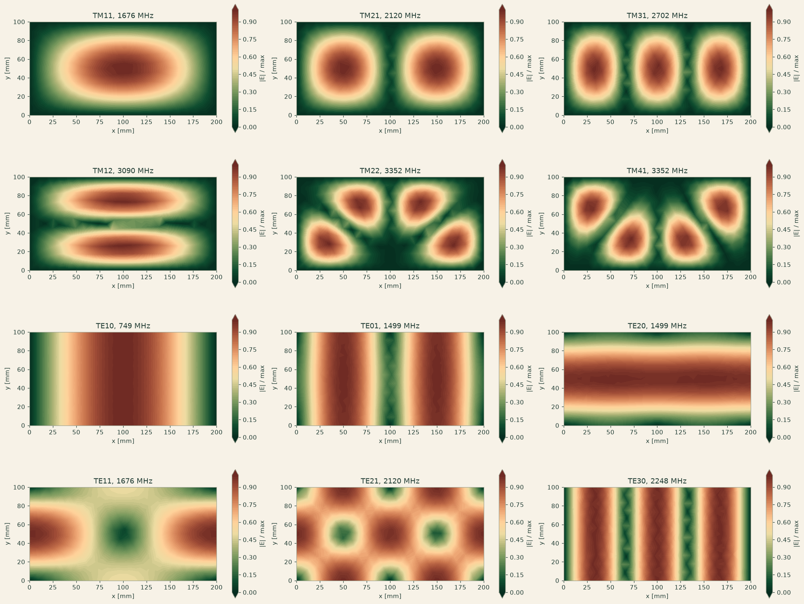
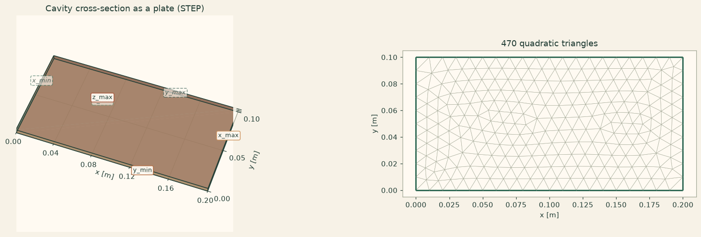

Docs › Examples › Eigenmodes of a rectangular metallic cavity
Microwaves, resonators · 2D
Eigenmodes of a rectangular metallic cavity
The lowest TM and TE resonances of the cross-section of a 200 mm x 100 mm metallic cavity, computed in three formulations.

What it computes
OneSimulation finds the eigenmodes with electromagnetic_modes for the out-of-plane electric field and the out-of-plane magnetic field with quadratic triangles, and for the in-plane electric field with second-order Nedelec elements, whose static solutions the eigensolver removes; a study over four meshes gives the convergence order. The script that builds the STEP file comes with the notebook.
What it checks
All eighteen computed frequencies agree with the exact c/2 sqrt((m/a)^2 + (n/b)^2) to better than 1e-4, the Nedelec ones to 5e-6, without spurious modes; the TE20 error falls from 2.4e-5 to 2.6e-7 over the mesh study (observed order 4.3).
Geometry
The notebook starts at the import of the CAD file rectangular_cavity_eigenmodes.step: STEP (AP242), readable by any CAD program, with the names of the faces that the boundary conditions use. Put it next to the notebook.

The geometry script
The script rectangular_cavity_eigenmodes_geometry.py builds the geometry with the CAD objects of OneSimulation and writes the file. Change a dimension there, run it, and run the notebook again.
"""Geometry of the OneSimulation example "Eigenmodes of a rectangular metallic cavity".
Builds with the CAD objects of OneSimulation a thin plate whose cross-section is the cavity,
200 mm x 100 mm, and writes rectangular_cavity_eigenmodes.step; all its side faces are metal walls.
"""
from onesim.cad.d3 import Box
Box(length=0.2, width=0.1, height=0.005).save("rectangular_cavity_eigenmodes.step")The notebook
The complete notebook, cell by cell. Run it to produce the figures and the comparison printout.
A long metallic tube of rectangular cross-section, \(a=200\) mm by \(b=100\) mm, supports standing waves whose fields do not vary along the tube: the resonances of its 2D cross-section. Two families exist. TM modes have only \(E_z\) (out of the plane) and vanish on the walls; TE modes have only \(H_z\), equivalently an electric field in the plane that is tangentially zero on the walls.
OneSimulation finds them with electromagnetic_modes in three formulations of the same equation \(\nabla\times\nabla\times\mathbf E=k_0^2\mathbf E\):
| formulation | unknown | elements | wall condition | |---|---|---|---| | Ez | \(E_z\) | quadratic Lagrange | \(E_z=0\) (perfect conductor) | | Hz | \(H_z\) | quadratic Lagrange | natural (\(\partial H_z/\partial n=0\)) | | Exy | \(E_x, E_y\) | second-order Nédélec | \(\mathbf n\times\mathbf E=0\) |
The in-plane formulation also has the static (curl-free) fields as solutions at zero frequency; the eigensolver removes them, so no spurious mode appears among the resonances.
The cross-section comes from the plate rectangular_cavity_eigenmodes.step, written by rectangular_cavity_eigenmodes_geometry.py with the CAD objects of OneSimulation.
Reference (Pozar, Microwave Engineering, 4th ed., §3.3; Jackson, Classical Electrodynamics, 3rd ed., §8.7). The cut-off frequencies of the rectangular guide are the resonances of the cross-section,
import numpy as np
from onesim.cad.exchange import load
from onesim.materials import VACUUM_PERMEABILITY, VACUUM_PERMITTIVITY
from onesim.materials.electromagnetic import IsotropicElectromagneticMaterial
from onesim.meshing import TriangularMesher
from onesim.numerics import Numerics
from onesim.numerics.fem import FiniteElement, Lagrange, Nedelec
from onesim.numerics.linear import ComplexSparseDirect
from onesim.physics.electromagnetics import (
FrequencyDomainMaxwell,
PerfectElectricConductor,
electromagnetic_modes,
)
from onesim.results.comparisons import convergence
from onesim.simulation import Problem, Simulation
from onesim.visualization import plots, theme
theme.set()
light = 1 / np.sqrt(VACUUM_PERMEABILITY * VACUUM_PERMITTIVITY)Geometry and mesh
section cuts the plate at mid-thickness. Quadratic triangles of 10 mm carry the three formulations; 20, 14, 10 and 7 mm form the mesh study.
plate = load("rectangular_cavity_eigenmodes.step")
cavity = plate.section((0, 0, 1), origin=(0, 0, plate.size[2] / 2))
a, b = cavity.size[0], cavity.size[1]
sizes = (0.02, 0.014, 0.01, 0.007)
meshes = {h: TriangularMesher(target_size=h).generate(cavity) for h in sizes}
fig = plots.figure(1, 2, size=(14, 4.5))
plots.geometry(
plate,
labels=False,
camera=plots.Camera(elevation=55, azimuth=-70),
title="Cavity cross-section as a plate (STEP)",
ax=fig[0],
)
plots.mesh(
meshes[0.01],
groups=("all",),
legend=False,
title=f"{meshes[0.01].cell_count} quadratic triangles",
ax=fig[1],
)
plots.show()Eigenmodes
modes returns the six lowest resonances of one formulation on one mesh; the walls are perfect conductors, which for Hz is the natural condition.
elements = {"Ez": Lagrange(order=2), "Hz": Lagrange(order=2), "Exy": Nedelec(order=2)}
modes = lambda polarization, h: (
lambda m: (
electromagnetic_modes(
Simulation(
problem=Problem(
name="Cavity",
geometry=cavity,
physics=(m,),
boundary_conditions=(
PerfectElectricConductor(
physics=m, boundary=cavity.boundaries.all
),
),
),
mesh=meshes[h],
numerics=Numerics(
spatial=FiniteElement(element=elements[polarization]),
linear_solver=ComplexSparseDirect(),
),
).solve_stationary(),
m,
mode_count=6,
target_frequency=0.5e9,
),
m,
)
)(
FrequencyDomainMaxwell(
domain=cavity.domain(),
frequency=1e9,
material=IsotropicElectromagneticMaterial(),
polarization=polarization,
phasor_convention="exp(-i*omega*t)",
amplitude_convention="peak",
)
)
solved = {polarization: modes(polarization, 0.01) for polarization in elements}Comparison with the exact frequencies
The exact TM frequencies belong to Ez, the exact TE frequencies to Hz and Exy.
exact = {
"TM": sorted(
(light / 2 * np.hypot(m / a, n / b), f"TM{m}{n}")
for m in range(1, 6)
for n in range(1, 4)
)[:6],
"TE": sorted(
(light / 2 * np.hypot(m / a, n / b), f"TE{m}{n}")
for m in range(0, 7)
for n in range(0, 4)
if m + n > 0
)[:6],
}
family = {"Ez": "TM", "Hz": "TE", "Exy": "TE"}
print("formulation mode computed [MHz] exact [MHz] relative difference")
for polarization, (found, _) in solved.items():
for f, (value, name) in zip(
np.sort(found.frequencies.real), exact[family[polarization]]
):
print(
f"{polarization:12s} {name:6s} {f / 1e6:15.4f} {value / 1e6:15.4f} {abs(f / value - 1):18.1e}"
)
study = {h: np.sort(modes("Exy", h)[0].frequencies.real) for h in sizes}
error = [abs(study[h][2] / exact["TE"][2][0] - 1) for h in sizes]
print(
f"mesh study, {exact['TE'][2][1]} with Nedelec elements: "
+ ", ".join(f"{1e3 * h:.0f} mm: {e:.1e}" for h, e in zip(sizes, error))
+ f"; observed order {np.polyfit(np.log(sizes), np.log(error), 1)[0]:.2f}"
)Figure
The six lowest TM modes (\(|E_z|\)) and TE modes (the magnitude of the in-plane electric field from the Nédélec formulation), each normalized to its maximum.
x, y = np.asarray(meshes[0.01].coordinates).T
triangles = np.asarray(meshes[0.01].cells)
shape = lambda polarization, i: (lambda values: values / values.max())(
np.linalg.norm(
np.abs(
solved[polarization][0]
.mode(i)
.field(solved[polarization][1].electric_field)
.evaluate(np.column_stack((x, y)))
),
axis=1,
)
)
fig = plots.figure(4, 3, size=(18, 14))
for row, polarization in enumerate(("Ez", "Exy")):
order = np.argsort(solved[polarization][0].frequencies.real)
for column, i in enumerate(order):
plots.heatmap(
1e3 * x,
1e3 * y,
shape(polarization, i),
triangles=triangles,
limits=(0, 1),
label="|E| / max",
title=f"{exact[family[polarization]][column][1]}, {solved[polarization][0].frequencies.real[i] / 1e6:.0f} MHz",
xlabel="x [mm]",
ylabel="y [mm]",
ax=fig[6 * row + column],
)
plots.show()Going further
Fill part of the cavity with a dielectric through RegionwiseElectromagneticMaterial to lower and split the resonances, or give the walls a finite conductivity with SurfaceImpedanceBoundary: the eigensolver then returns complex frequencies whose ratio is the quality factor of each mode.